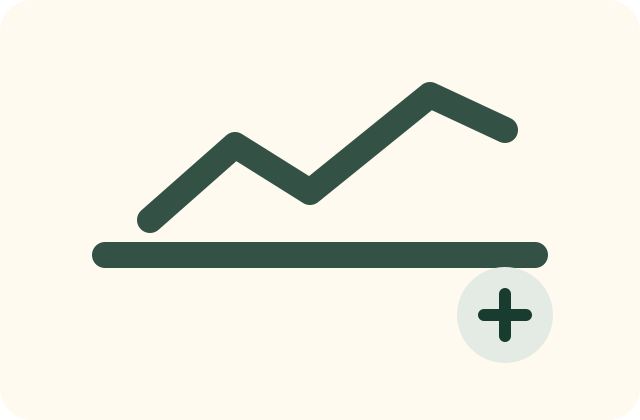
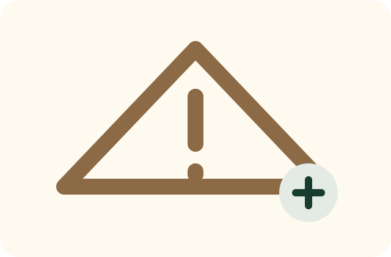
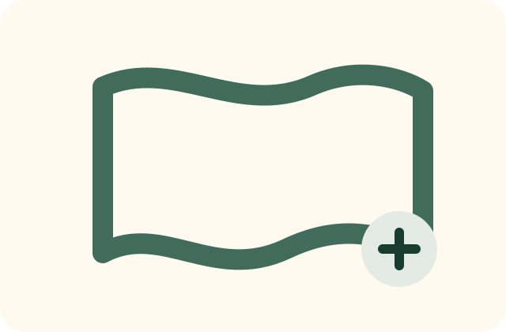
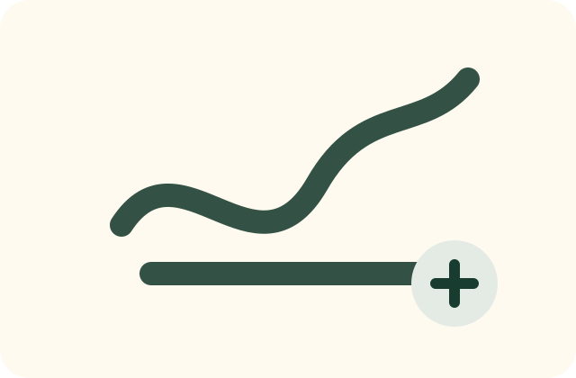
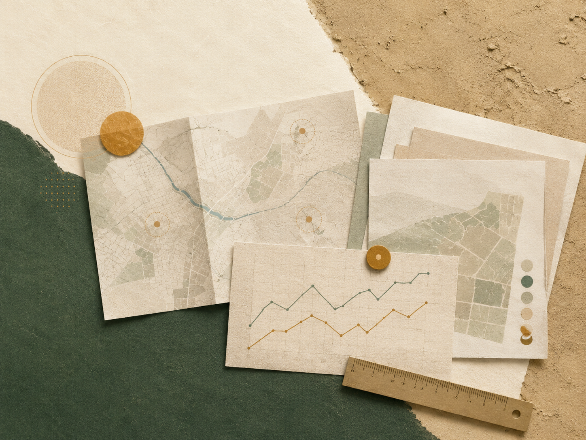
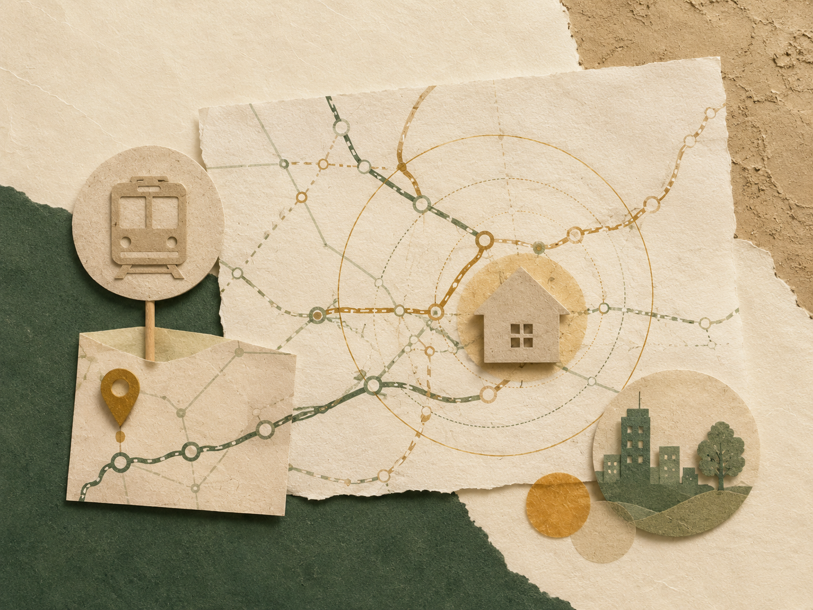

土地購入 諸費用ざっくりシミュレータ
土地価格から、仲介手数料と諸費用をざっくり試算します。 実際の費用は契約条件・融資・登記内容により変わります。
土地価格を入力すると、概算が表示されます。
How to read a place
情報を集めるだけでなく、複数の情報を重ねて「その場所の文脈」を読む。 それが、まほろば不動産戦略室の土地の見方です。
使い方： 気になる土地やエリアが出てきたら、まずは「価格」「災害」「地形」「生活圏」の順に確認してください。 ひとつのサイトだけで判断せず、複数の情報を重ねて見るのがポイントです。
First 3
土地や地域を見るときに、最初の入口として使いやすい3つです。
Toolbox
目的に合わせて、必要なサイト・アプリを探せます。






Original Tools
相談前の整理や、土地の初期判断に使える簡易ツールです。
土地価格から、仲介手数料と諸費用をざっくり試算します。 実際の費用は契約条件・融資・登記内容により変わります。
色の有無だけでなく、地形・避難・生活動線まで確認しましょう。
LINEやフォーム相談の前に整理しておくと、初回相談の精度が上がります。